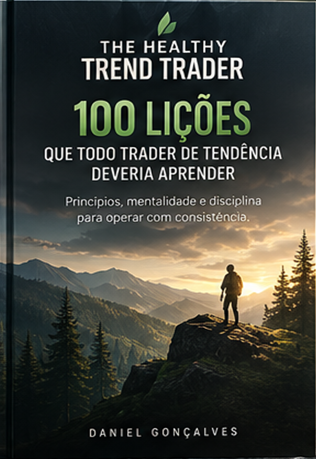
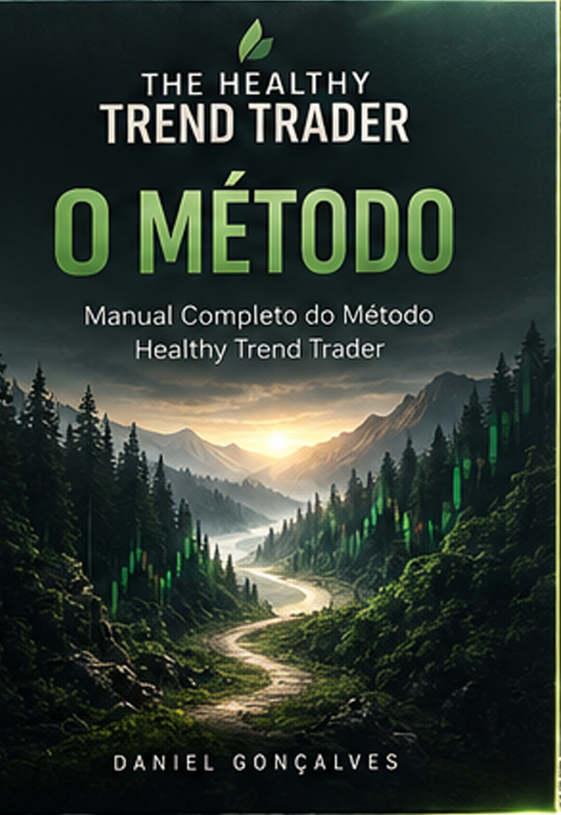
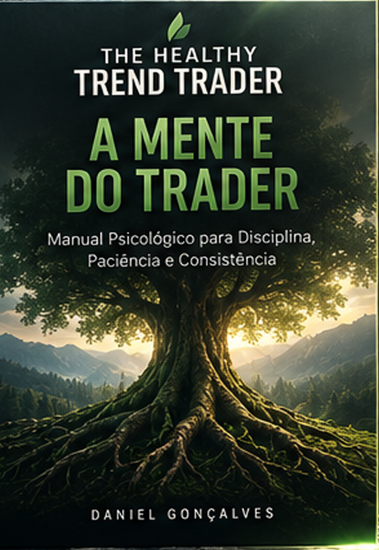

01
THE HEALTHY TREND TRADER
100 Lições que Todo Trader de Tendência Deveria Aprender
Lições valiosas sobre mercado, mentalidade, disciplina, gestão de risco e consistência para traders de tendência.
▤ PRÓXIMAMENTEBIBLIOTECA
CONHECIMENTO. PROCESSO. MENTALIDADE.
A JORNADA COMPLETA PARA A CONSISTÊNCIA.
Seis livros. Seis pilares.
Uma jornada para transformar sua forma de operar
e sua forma de pensar.

THE HEALTHY TREND TRADER
Lições valiosas sobre mercado, mentalidade, disciplina, gestão de risco e consistência para traders de tendência.
▤ PRÓXIMAMENTETHE HEALTHY TREND TRADER
Como desenvolver a mentalidade, o controle emocional e os hábitos que sustentam resultados consistentes no longo prazo.
▤ PRÓXIMAMENTETHE HEALTHY TREND TRADER
O checklist completo para identificar, executar e gerenciar trades A+ com clareza, objetividade e disciplina.
▤ PRÓXIMAMENTETHE HEALTHY TREND TRADER
Ferramentas e modelos para registrar, analisar e aprender com cada operação. Transforme dados em evolução.
▤ PRÓXIMAMENTE
THE HEALTHY TREND TRADER
Manual Completo do Método Healthy Trend Trader
O guia completo do método: contexto, setup, execução, gestão de risco, acompanhamento e saídas.
◷ EM BREVE
THE HEALTHY TREND TRADER
Manual Psicológico para Disciplina, Paciência e Consistência
Um manual profundo sobre as armadilhas mentais do trader e como dominá-las para alcançar consistência verdadeira.
◷ EM BREVE